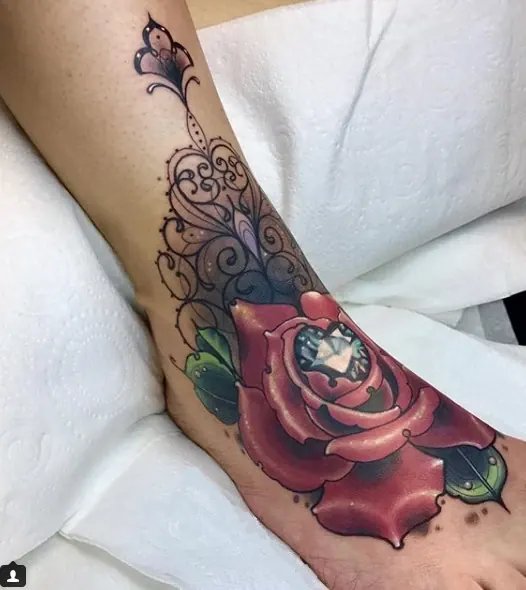
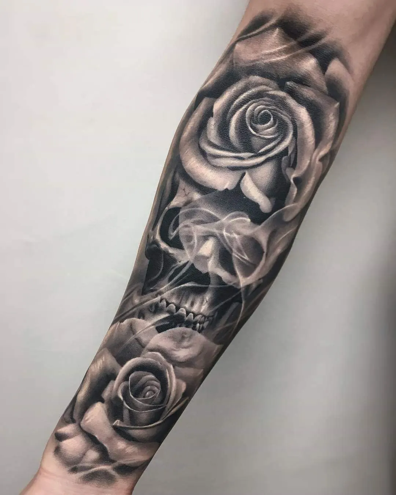
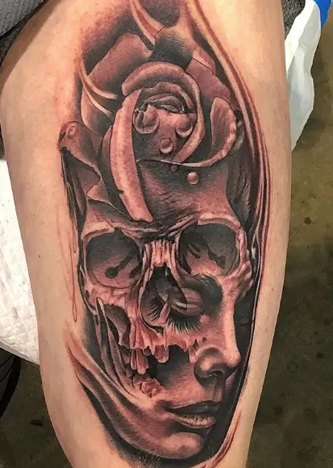
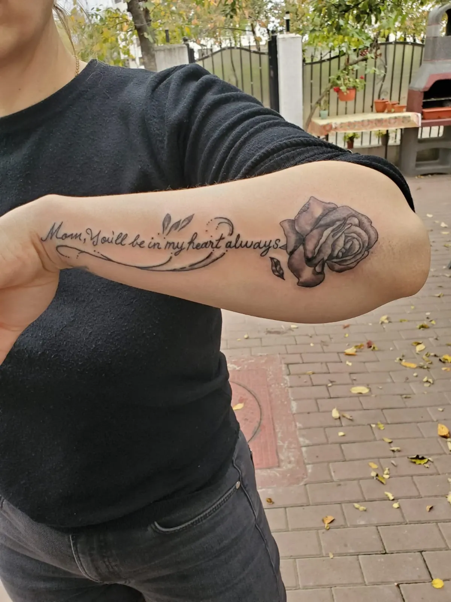
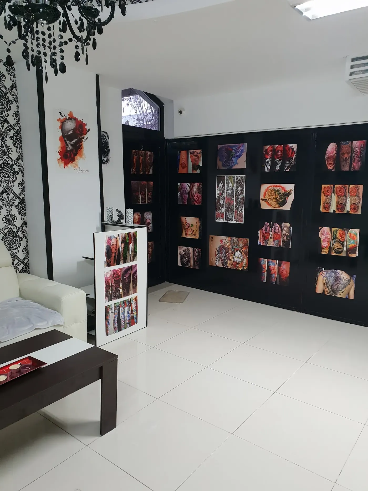
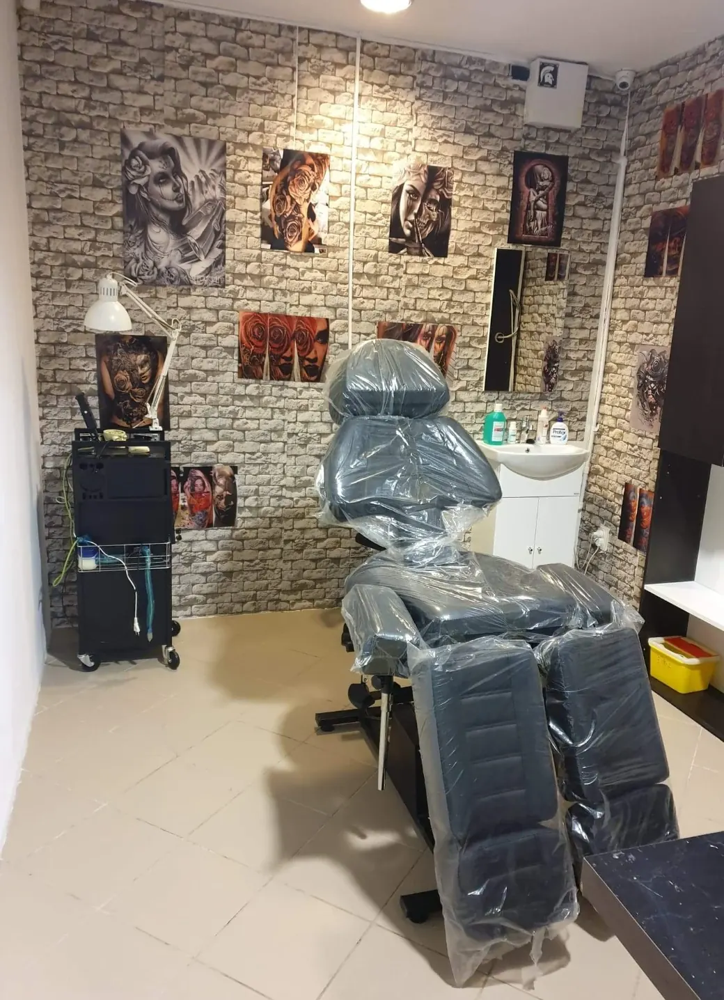
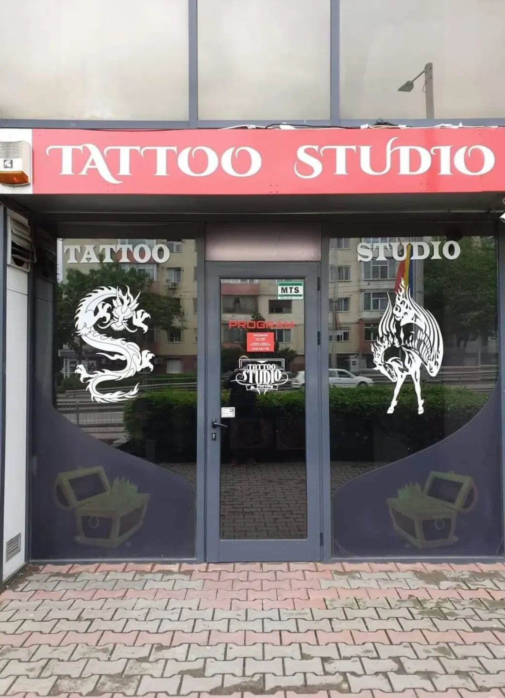

TattooAlice
{{Trandafiri realiști, cranii, dantelă, litere scrise de mână și piercing. Desenul se face pentru tine; tu alegi doar zona și mărimea.|Realistic roses, skulls, lace, hand-lettered script and piercing. The design is made for you; you just pick the placement and the size.|Rosas realistas, caveiras, renda, letras à mão e piercing. O desenho faz-se para si; só escolhe a zona e o tamanho.}}

{{Ce desenăm, pe scurt.|What we draw, in short.|O que desenhamos, em resumo.}}
{{Fiecare pătrat e un stil pe care îl vezi în lucrările studioului. Atinge unul și cererea pornește cu el bifat.|Each square is a style you can see in the studio’s work. Tap one and your request starts with it ticked.|Cada quadrado é um estilo que se vê nos trabalhos do estúdio. Toque num e o pedido começa com ele marcado.}}
{{Trandafiri, mereu trandafiri.|Roses, always roses.|Rosas, sempre rosas.}}
{{Alb-negru cu umbră fină sau roșu plin cu reflexe — trandafirul apare în aproape toate lucrările.|Black and grey with soft shading or solid red with highlights — the rose turns up in almost every piece.|Preto e cinza com sombra suave ou vermelho cheio com reflexos — a rosa aparece em quase todos os trabalhos.}}




{{Tapet damasc, candelabru negru, gresie albă.|Damask wallpaper, black chandelier, white tiles.|Papel damasco, candelabro preto, chão branco.}}
- {{Șoseaua Nicolina 5, Iași.|Șoseaua Nicolina 5, Iași.|Șoseaua Nicolina 5, Iași.}}
- {{Lucrările de pe pereți sunt catalogul: le vezi pe viu înainte să alegi.|The prints on the walls are the catalogue: see them up close before you choose.|Os trabalhos nas paredes são o catálogo: veja-os ao vivo antes de escolher.}}
- —
{{Umbră fină, linie sigură.|Soft shade, steady line.|Sombra suave, linha segura.}}
{{Realism alb-negru, culoare cu reflexe, dantelă ornamentală și lettering. Câteva piese din studio:|Black-and-grey realism, colour with highlights, ornamental lace and lettering. A few pieces from the studio:|Realismo a preto e cinza, cor com reflexos, renda ornamental e lettering. Algumas peças do estúdio:}}
{{Mai multe lucrări pe pagina de Facebook a studioului.|More work on the studio’s Facebook page.|Mais trabalhos na página de Facebook do estúdio.}} facebook.com/salontatuajeiasi1 · Instagram: {{de confirmat|to be confirmed|a confirmar}}
{{Alege un pătrat din foaie.|Pick a square off the sheet.|Escolha um quadrado da folha.}}
{{Tatuaj sau piercing, în trei atingeri.|Tattoo or piercing, in three taps.|Tatuagem ou piercing, em três toques.}}
{{Cartonașul se completează singur. Îl trimiți pe WhatsApp sau prin SMS și primești înapoi o zi și un preț.|The card fills itself in. Send it by WhatsApp or SMS and you get back a date and a price.|O cartão preenche-se sozinho. Envie por WhatsApp ou SMS e recebe de volta um dia e um preço.}}
{{Alb, negru și roșu.|White, black and red.|Branco, preto e vermelho.}}
{{Gresie albă, tapet damasc, un candelabru negru și pereții plini de lucrări printate. Cabina de lucru e separată, cu scaun reglabil.|White tiles, damask wallpaper, a black chandelier and walls full of printed work. The work room is separate, with an adjustable chair.|Chão branco, papel damasco, um candelabro preto e paredes cheias de trabalhos impressos. A sala de trabalho é separada, com cadeira ajustável.}}


{{Întrebări de dinainte.|Questions before you come.|Perguntas antes de vir.}}
{{Șoseaua Nicolina 5.|Șoseaua Nicolina 5.|Șoseaua Nicolina 5.}}
{{Iași, 700707. Sună sau scrie înainte: se lucrează pe programare.|Iași, 700707. Call or write first: it’s by appointment.|Iași, 700707. Ligue ou escreva antes: trabalha-se por marcação.}}
{{Telefon|Phone|Telefone}}
0748 168 683Facebook: Salon tattoo iasi · Instagram: {{de confirmat|to be confirmed|a confirmar}}